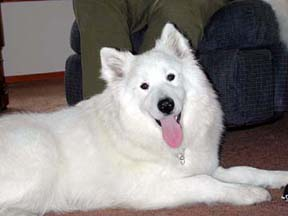
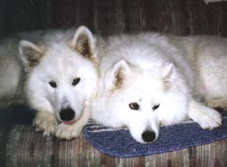
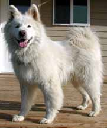
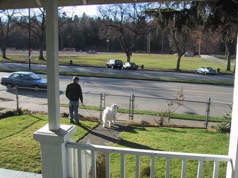
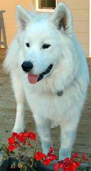
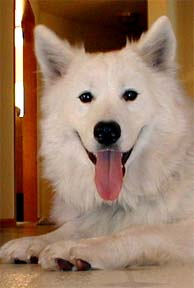

RESCUE SUCCESS STORIES
"Jade"
 |
Nine month old Jade came from a backyard breeder who thought she had a blood disorder and was going to euthanize her. She was taken to a vet, where it was determined she had no blood problems -- just a dental problem that could be controlled (enamel hypoplasia). She was spayed, her teeth were cleaned, and she was ready to find her forever home. |
| Jade was exactly the right dog for a family who already had a samoyed from Rescue. She is inseparable from her new sister Sonoma, and her new family is thrilled with her sweet disposition. She has a nice yard to play in, and gets walks several times a day. Jade is a hit with all her new neighbors, and everyone who meets her loves her. |  |
"Mori"
 |
Mori was found running loose on a street in Napavine, Washington, and taken to the Lewis County Shelter. Rescue received a phone call on the morning of his last day, and was able to spring him just in time. Mori is about two years old. He has a wonderful, loving personality and instantly got along well with the other dogs in his foster home. |
| Mori found a terrific home with a couple in Seattle, and now lives across the street from Greenlake Park. His new mom, Holley, writes "Mori LOVES the park. When he sees the leash come out, he does a little dance and shakes his head back and forth. All those smells must be like a fireworks display for a dog." He lives as roommate to two cats and a couple of chinchillas, as well as his new mom and dad. |  |
"Charlie"
 |
I was bred by a backyard breeder, and my first owner took me home because he wanted a dog for his kids. I guess they didn't feel the same way, because they pretty much ignored me. When I was seven months old, and really getting big and strong, they gave me to a family with little kids! I loved the little ones, and they loved me too. They were all really neat people, but they lived in the middle of Seattle and there wasn't enough room for me to run. I started digging and eating things like the fence in the backyard, and big yummy pieces of furniture. They added a new baby to the family, and said they realized that for my own good, I needed to find a new home. |
The rescue people were all so nice, and they understood that my family was doing what was best for me, even if I didn't want to leave. They found some people named Ron and Kathy, who love sammies. We met them at a park, halfway between homes, and they introduced me to Tasha, the 3-year-old samoyed who already lived with them. I was just over a year old, and big and really friendly, and was SO excited to meet her! After I calmed down, Tasha said I could come live with them. Two days later, my old family took me to my brand new home, so the kids could see where I was going to live.
| When they drove away I was sad to see them go, but it was really exciting to play with another dog all day. In fact, my new friend Tasha lost five pounds the first month I was here! Now it's been a couple months, and I love all the attention I get. They say I had separation anxiety, which means I didn't like to be left home without my people. They've been training me to stay home alone, and I'm okay now even if they're gone a couple hours. I get to play, I get long walks, I get tummy rubs when I ask, I have a big yard, and now I know it's my home. They say they love me, and I can stay here the rest of my life! |  |
 |
Charlie is a big samoyed who packs every
ounce with love. The neglect from his puppyhood has caused some
problems with separation anxiety, but it's getting less every day. He had
a tendency to bark, but without the stimulation of living in town, he's getting
much better (and quieter). His new owners say he's a "forever"
dog, because that's how long they are going to keep him.
Update after one year: Charlie is a permanent member of the family, and they can't imagine life without him. His separation anxiety is completely gone and he is mellowing into an adult. Recently he began agility training, and is doing well at it. By the way, Tasha has lost over 30 pounds and is at a perfect weight -- and they are best friends. |